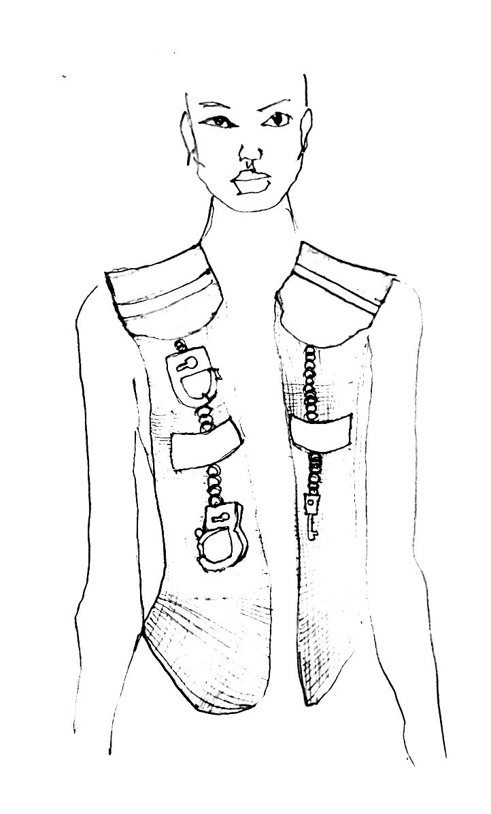
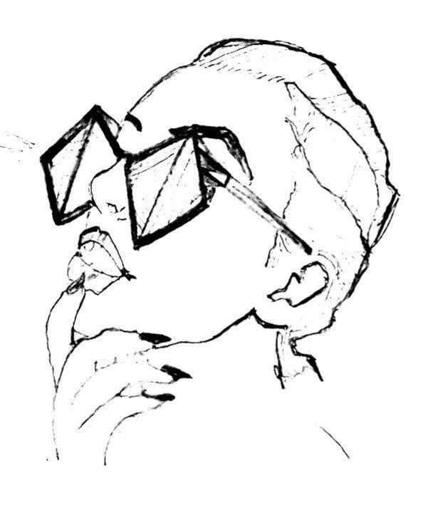
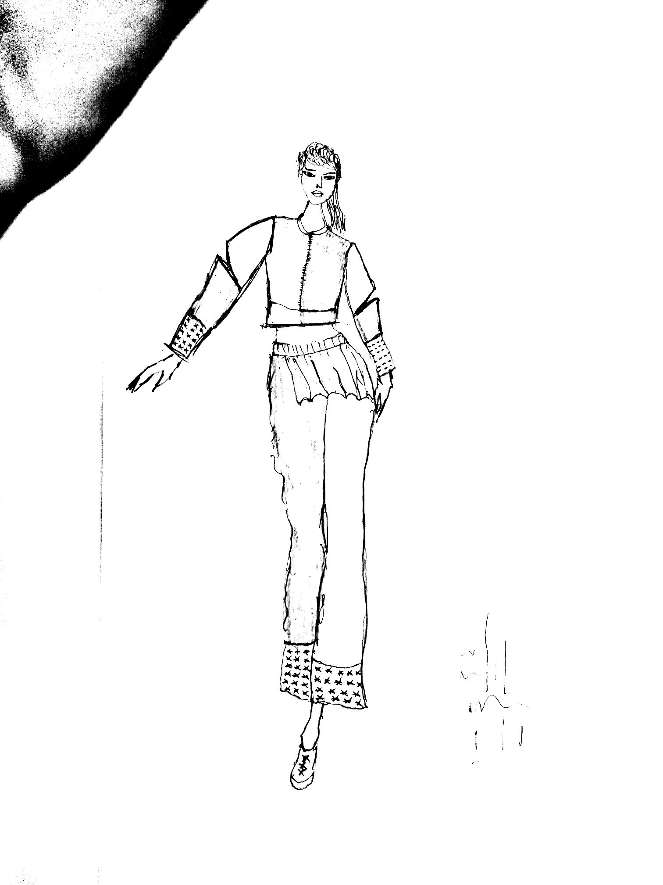
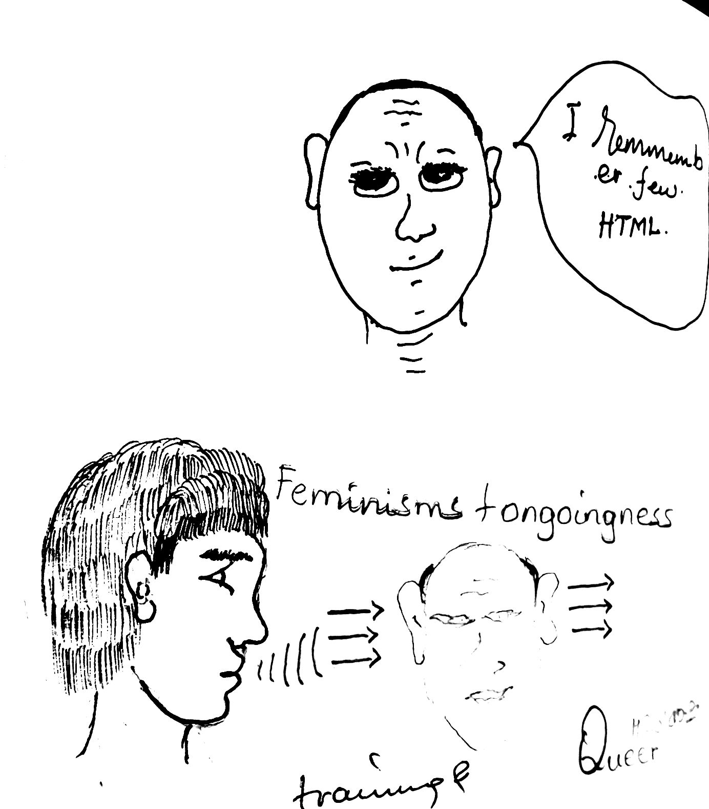

I work for diversity
  
feruz teame
09/09/2019
11:00 pm(my bedroom)
Today was feel great day to meet my new classmeet.They are very nice people even our teachers. In the afternoon of our first day, there was a question
Is there any problem with open design course 2019 profile to write refugee and asuylem skeers?
First who is refugee?
As my openion refugee is a person who can face many challanges with diffrent reason.To do something in your life with many problems such as fainanical, lonely,new cultural and languages..etc, it is not easy.So with these all challenges if you can do what you want or what you wish in your life, you are strong enough.Every solutions are created by problems, so a person who has more problem he/she is more problem solver becouse you have an exprence how to solve your problems.For me refugee means who can face challenges and never kneeldown.
so for me there is no problem to write these things to our profile becouse I ACCEPT MY SELF AS IT IS.
Abreham yohannes
in de zaal
I never accept feminisms
